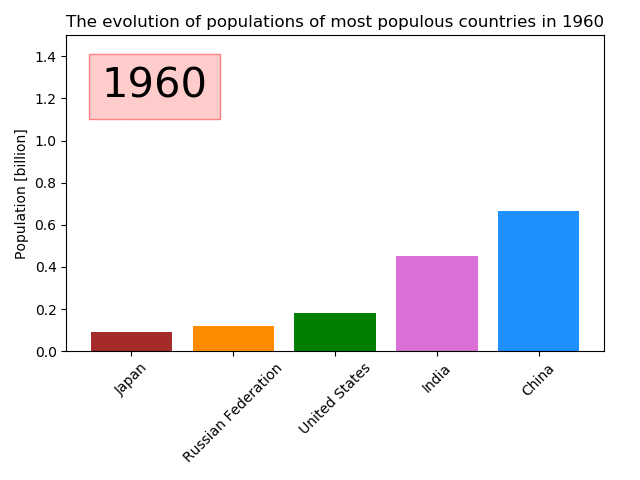
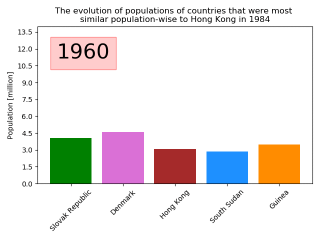
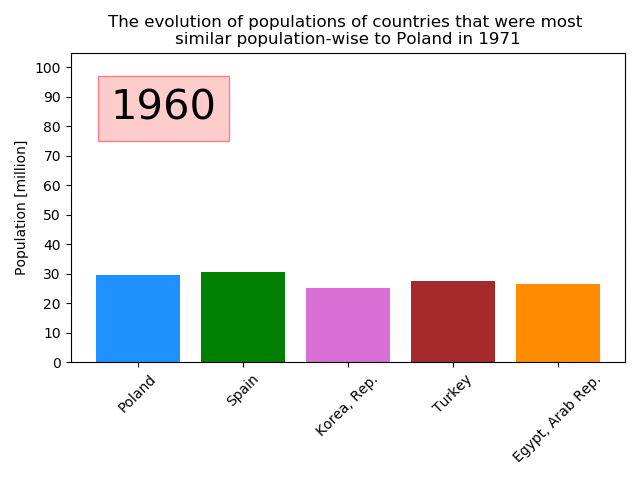

The following plot shows the evolution of populations of most populous countries in 1960.
The following plot shows the evolution of populations of a random country (Hong Kong) and 4 other closest population-wise countries in a random year (1984).
The following plot shows the evolution of populations of Poland and 4 other closest population-wise countries in a random year (1971).
